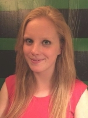
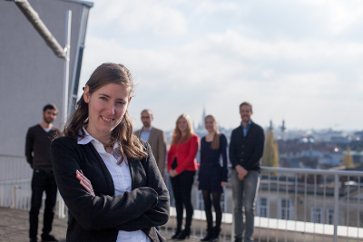

TEAM MEMBERS

Bernhard Baumann, PhD

I’m an associate professor at the Center for Medical Physics and Biomedical Engineering at the Medical University of Vienna (MUW). I studied physics at the University of Vienna and received a PhD degree in Medical Physics from MUW (2009, supervisor: Christoph K. Hitzenberger). After postdoctoral training at the Research Laboratory of Electronics at the MIT and at New England Eye Center at Tufts University in 2010 and 2011, I returned to Vienna to do research and teach at MUW.
My research interests are the development of new optical methods for biomedical imaging – in particular optical coherence tomography (OCT) – and their application for improved diagnostics of diseases in both clinical and preclinical research.

Marco Augustin, MSc

I received my BSc and MSc in medical informatics from the Technical University of Vienna, Austria, in 2010 and 2014, respectively.
I joined the Baumann Lab in July 2014 and I am currently enrolled as PhD student for medical physics at the Medical University of Vienna, Austria.
My interests include optical imaging techniques, especially optical coherence tomography and its functional extensions, as well as image processing and pattern recognition particularly in life sciences.

Danielle Harper, MPhys
I joined the Baumann Lab in September 2015 after completing my Masters degree in physics at the University of St Andrews in the United Kingdom.
As a PhD student at the Medical University of Vienna, I am currently working to design a new OCT system which is tailored for the in vivo functional imaging of the retina of animal models. My main interests lie in optical imaging, particularly in the optical designs which make techniques such as OCT possible.
Antonia Lichtenegger, MSc
I finished my two master studies, technical mathematics and Biomedical Engineering, in 2015 at the Technical University of Vienna.
I joined the Baumann Lab in November 2015 and I am enrolled as a PhD student at the Medical University of Vienna. My current focus of research lies in designing, setting up and testing OCT systems. Furthermore my interests are integrating multimodal extensions to OCT systems and imaging processing.
Pablo Eugui, MSc
I started working in the Baumann Lab in November 2015 after finishing my Masters in Biomedical Engineering in the Universidad Publica de Navarra in Spain.
I am currently enrolled as a PhD student of the Medical University of Vienna and working in fiber-based optical coherence tomography systems. My interests are optical imaging with different techniques, signal and image processing applied to the medical field and the study of different neurological diseases.

Stanislava Fialova
I studied biomedical physics, interdisciplinary study programme in Physics and Medicine, at Comenius University in Bratislava, Slovakia.
In my PhD work at the Medical University of Vienna I am currently working in the field of polarization sensitive fourier domain OCT (designing, setting up, testing, data processing, measurements etc.). Imaging target is retina and sclera of rat and mice.
Bachelor, Master Students and Interns

Konrad Leskovar
I’m working in the Baumann lab during my project thesis for my master studies in technical physics at the Technical University of Vienna.
In my internship I’m working with a fast scanning stage which is used to collect pictures from tissues for creating large-scale images in connection to a microscope as well to an OCT-System.
Johannes Schirmer, BSc (Medical Student @ Medical University of Vienna, Vienna, Austria)
Simon Strehn (Master Student, Physics @ Vienna University of Technology, Vienna, Austria)
Carlos Reyes (Master Student, Europhotonics @ Erasmus Mundus Master)